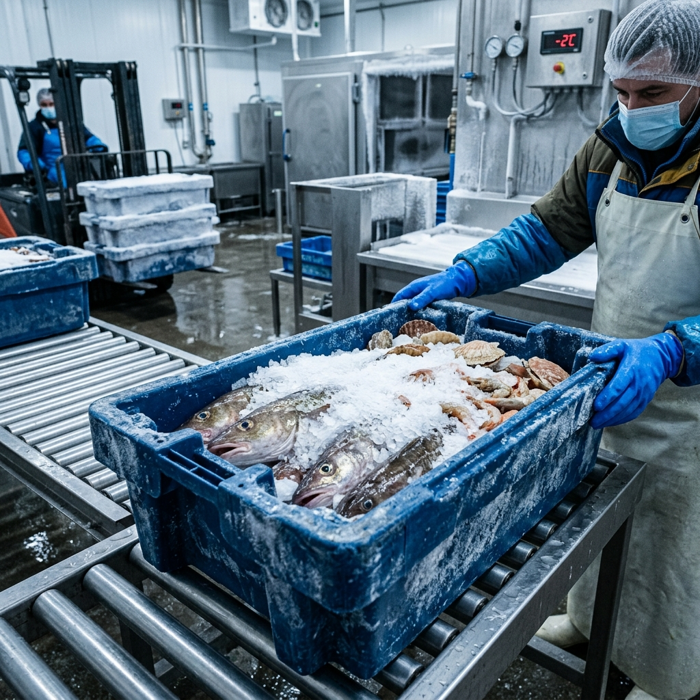

OUR SEAFOOD VARIETIES & QUALITY STANDARDS
Explore our curated selection of wild-caught and sustainably farmed finfish and shellfish, harvested with integrity and held to the highest sashimi-grade freshness standards.
SEAFOOD VARIETIES: FINFISH & CRUSTACEANS
Select any category above to view our seasonal wild capture and responsibly farmed species.
Aquaculture
Sashimi Grade A+
Atlantic Salmon
Salmo salar · Certified ASCHigh-omega fat content with deep coral marbling and silky mouthfeel. Superior grade for raw crudo or pan-searing.
 Wild Capture
Wild Chinook #1
Wild Capture
Wild Chinook #1
Pacific King Salmon
Oncorhynchus tshawytscha · TrolledThe undisputed king of wild salmon with the highest natural oil content, velvety texture, and rich, savoury flavour.
 Wild Capture
MSC Certified
Wild Capture
MSC Certified
Sockeye Salmon
Oncorhynchus nerka · Wild AlaskaNaturally brilliant ruby-red flesh with robust, mineral-rich flavour and firm texture. Holds shape superbly over fire.
 Wild Capture
Sashimi Grade #1
Wild Capture
Sashimi Grade #1
Yellowfin Tuna
Thunnus albacares · Line-CaughtBright ruby-red translucent meat with lean, firm texture and clean mild taste. Precision-cut for sushi loins and carpaccio.
 Wild Capture
MSC Certified Pole
Wild Capture
MSC Certified Pole
Albacore Tuna
Thunnus alalunga · North AtlanticPale pinkish-ivory flesh known as 'white tuna', offering a delicate palate, dense steely flake, and superb searing profile.
 Aquaculture
Ultra-Premium Otoro
Aquaculture
Ultra-Premium Otoro
Bluefin Tuna
Thunnus thynnus · Ranched Open SeaWorld-class fat marbling with melt-in-mouth Otoro belly, Chutoro medium belly, and crimson Akami lean loin cuts.
 Wild Capture
Chef's Choice Daily
Wild Capture
Chef's Choice Daily
European Sea Bass
Dicentrarchus labrax · Line-CaughtSilvery, fine-scaled Mediterranean bass with tender, sweet white flakes and crisp-crackling skin capability.
 Wild Capture
MSC Certified Toothfish
Wild Capture
MSC Certified Toothfish
Chilean Sea Bass
Dissostichus eleginoides · Deep SeaLegendary snow-white, thick-flaked meat brimming with natural oils. Remains incredibly succulent under high-heat roasting.
 Wild Capture
Day-Boat Landed
Wild Capture
Day-Boat Landed
Black Sea Bass
Centropristis striata · Atlantic CoastFirm, lean, small-flake white flesh with subtle sea-spray sweetness. Highly adaptable for whole-roasted or pan-crisped service.
 Aquaculture
GlobalG.A.P. Certified
Aquaculture
GlobalG.A.P. Certified
King Prawns
Litopenaeus vannamei · Mangrove CoastPlump, crunchy texture with clean oceanic sweetness. Uniformly graded for banquet presentation, paellas, and grill skewers.
 Aquaculture
ASC Eco-Certified Jumbo
Aquaculture
ASC Eco-Certified Jumbo
Tiger Prawns
Penaeus monodon · Indo-PacificGiant signature black-striped crustacean with dense meaty snap and rich shellfish umami. Unrivalled plate presentation.
 Wild Capture
Live Tank / Sashimi #1
Wild Capture
Live Tank / Sashimi #1
Spot Prawns
Pandalus platyceros · Pacific CoastPrized for translucent sweet flesh and delicate caviar roe. The gold standard for raw sashimi and flash-broiled live prawns.
 Wild Capture
MSC Certified Sections
Wild Capture
MSC Certified Sections
Snow Crab
Chionoecetes opilio · Bering SeaSweet, tender white meat with gentle fibrous texture and delicate sea brine. Pre-cooked and brine-frozen for rapid thaw-and-serve.
 Wild Capture
Pacific Coast Live
Wild Capture
Pacific Coast Live
Dungeness Crab
Metacarcinus magister · Oregon CoastSweet, succulent leg meat with rich buttery body meat. Revered along the Pacific Coast for classic seafood boils and crab cakes.
 Wild Capture
Colossal Red King #1
Wild Capture
Colossal Red King #1
King Crab
Paralithodes camtschaticus · AlaskaColossal spiny legs bursting with tender, rich crimson-tipped meat. The pinnacle luxury shellfish for showpiece centerpieces.
 Wild Capture
MSC Certified Pelagic
Wild Capture
MSC Certified Pelagic
Atlantic Mackerel
Scomber scombrus · Cold North SeaVibrant iridescent skin, high heart-healthy omega-3 fats, and deep rich flavor. Outstanding for hot smoking or skin-crisped grilling.
 Wild Capture
Day-Boat Handlined
Wild Capture
Day-Boat Handlined
Spanish Mackerel
Scomberomorus commerson · CoastalFirm, pale meat with fine texture and subtle clean oiliness. Holds exceptional moisture during grilling and pan-roasting.
 Wild Capture
Sashimi Grade Shime-Saba
Wild Capture
Sashimi Grade Shime-Saba
Horse Mackerel
Trachurus japonicus · Pacific WatersThe sushi bar essential (Aji). Refined oily sheen, tender texture, and clean ocean umami. Excellent cured in vinegar or tataki.
FRESHNESS & QUALITY STANDARDS
Sashimi-Grade Grading, At-Sea Chilling & Cold-Chain Mastery.
Our responsibility to the ocean is matched by an uncompromising dedication to culinary quality. Every finfish and crustacean landed undergoes rigorous sensory grading by certified master fishmongers before dispatch—evaluating gill brightness, eye clarity, flesh elasticity, and natural ocean aroma to guarantee sashimi-grade integrity.
By enforcing immediate slush-ice bleeding at sea down to 0°C–2°C and operating HACCP Grade-A handling facilities, we preserve natural cellular moisture and healthy omega oils. Continuous IoT temperature logging accompanies every crate, guaranteeing your kitchen receives pristine seafood at peak culinary vitality with maximum shelf life.

CHEF-READY WHOLESALE FORMATS
Precision processing and custom butchery tailored to eliminate kitchen prep waste and optimize service speed.
Whole Round & G&S
Delivered untouched or gutted-and-scaled for maximum freshness, in-house master butchery, and zero-waste nose-to-tail culinary programs.
Filleted, Skinned & Trimmed
Expertly pin-boned and portion-trimmed to your kitchen specifications, reducing culinary prep labor while maintaining knife-edge precision.
Precision Sashimi Portions
Saku blocks, uniform weight steaks, and live/chilled crustacean clusters calibrated for consistency, portion cost control, and swift plating.